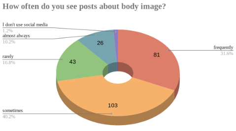
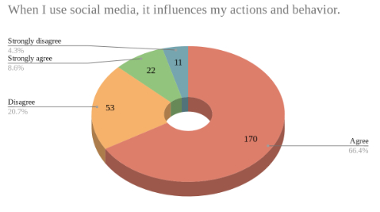
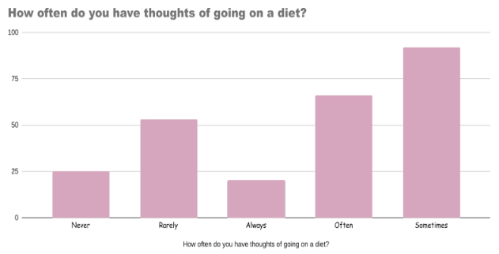
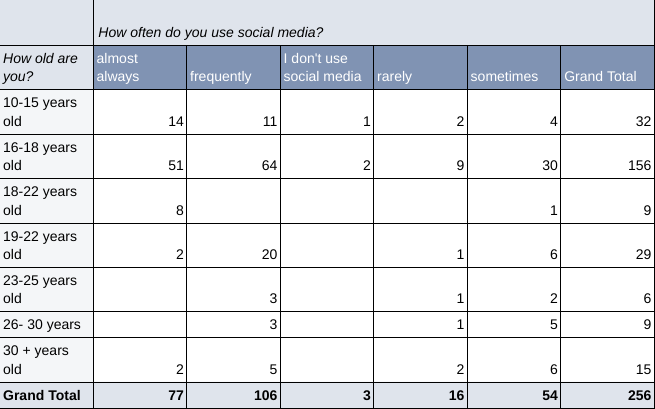

Figure 1
Among the females we surveyed, 75 percent of them agree or strongly agree with the idea that social media affects their actions and behavior. This data proves that females are aware of the fact that social media can affect their opinion on certain things but they are not aware of the dangerous impact unrealistic beauty standard can bring to them.
Figure 2
According to Figure 2, 192 out of 256 respondents agree or strongly agree that social media plays a huge role in how it affects one's self-esteem through actions and behavior. This proves that females are aware of the fact that social media can affect their opinion on certain things but they does not understand the negative impact social media have on them
Figure 3
Based on Figure 3, more than half of the respondents stated that they sometimes or often have the thought of going on a diet. This shows that many female adolescents are unaware about the solutions or actions that can be used to help them to prevent this issue. This can have a huge impact because as the percentage increases, actions such as spending more money on cosmetic products, doubting their own worth, eating unhealthy, and harming themselves can occur.
Figure 4
We have created a pivot table to combine the data that compares the age and the frequency that females use social media. This table still supports our data that females in their adolescence are more likely to be on social media compared to those who are older. For example, between the ages of 10 to 18, 34.5 percent stated that they “almost always” use social media while, from age 19 and above, only 17.6 percent state that they “almost always use social media. From this we can see that social media attracts females in their adolescence more than other age groups. Additionally, the 66.2 percent of the respondents stated that they are almost always on social media are females between the ages of 16 to 18. This supports the conclusion that young females are more vulnerable towards the activities on social media which can guide them toward unhealthy perception of themselves.